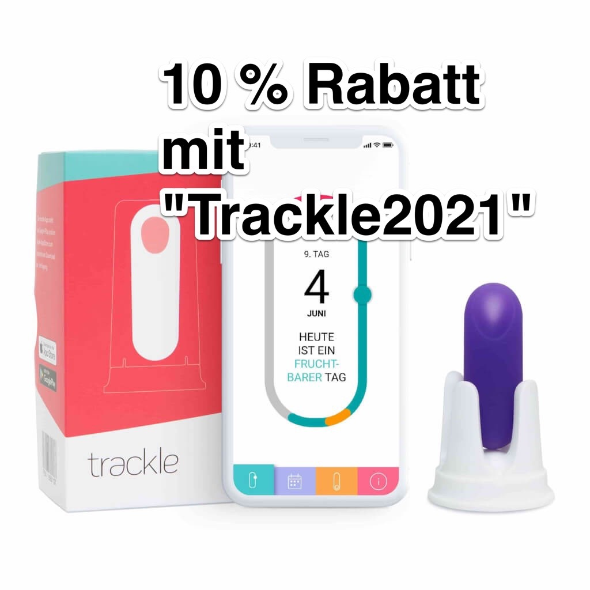

Mit "Trackle2021" erhaltet ihr 10 % auf den Trackle oder Trackle Catch - auch beim bereits rabattierten Preis bzw. einen Nachlass von 10 Euro auf das Trackle Go Paket. Einfach den Code "Trackle2021" beim Checkout auf eingeben - am besten kommst Du über diesen Link auf die Seite :-)
Warum Trackle?
Trackle ist bei Kinderwunsch und zur natürlichen Zykluskontrolle entwickelt worden. Geeignet für alle Frauen mit Periode geeignet: Auch Frauen mit unregelmäßigen oder sehr langen Zyklen, mit PCOS oder in den Wechseljahren können trackle nutzen.
Der trackle Zykluscomputer bietet eine sehr exakte Messung der Basaltemperatur. Die Messung erfolgt automatisch im Schlaf, die Auswertung bekommst du auf Dein Smartphone, ganz easy trackle kostet 199 Euro und Du kannst das Gerät 2 Jahre lang nutzen.
Klare Empfehlung für Trackle Sensorsystem! Ich kann Trackle nach langer eigener Erfahrung empfehlen.

Mein subjektiver Erfahrungsbericht bzw. die Gründe, warum ich den Ovolane definitiv NICHT weiterempfehle und mich nun für den Trackle entschieden habe:
Vorab: ich mache inzwischen schon seit fast 10 Jahren NFP, bin mit den Sensiplan-Regeln vertraut und hatte vorher 7 Jahre lang einen iButton (Temperatursensor). Leider gibt es die iButtons von Endotherm nicht mehr, die mit einer speziellen Dichtung gegen Feuchtigkeitsschäden geschützt waren und die anderen hatten bei mir alle nach etwa 1,5 Jahren einen Feuchtigkeitsschaden. Daher wollte ich nun umsteigen. Ich benutze NFP weder zur Verhütung, noch zum Schwangerwerden - sondern zur Zyklusbeobachtung bzw zur Vorhersage meiner nächsten Menstruation, da ich sehr lange und unregelmäßigige Zyklen habe.
Meine Wahl fiel auf den Ovolane. Was gefiel mir theoretisch daran?
- Ovolane Werte lokal auf dem Handy aus er hat einen lange Lebensdauer von 5 Jahren und die garantiert (ansonsten wird er ausgetauscht, was bisher bei einigen auch schon geschehen ist)
- er ist sehr klein
- der Kunden-Support hat vor dem Kauf geduldig meine Fragen beantwortet (allerdings auch einiges ausgelassen und versprochen, was wohl nie umgesetzt wird, dazu unten mehr)
- die Möglichkeit, seine Daten exportieren zu können (der sogenannte Ovolane.me-Cloud Service, dazu unten auch mehr)
Und das hier sind die Negativpunkte nach einigen Wochen Benutzung:
- Es wird ein völlig willkürlicher Wert für die Nacht genommen. Wenn man eine zusätzliche App zur Auswertung nehmen möchte, muss man den tiefsten Wert der Nacht abschätzen.
- Man kann sich den Wert, den man nehmen möchte, nicht genauer anzeigen lassen
- auf der Homepage wird - auch obwohl das Ovolane Team darauf hingewiesen wurde und versprochen hat, es zu ändern - bis heute immer noch mit dem Cloud.Me Service geworben. Diesen gibt es aber gar nicht.
- Generell reagiert das Support Team immer schnell und freundlich, allerdings wird bei allen Antworten ein Beheben der jeweiligen Probleme durch ein Update der App versprochen - wenn ich das hier richtig verfolgt habe, dann gibt es diese "Standard-Antwort” schon Monate, ein Update selbst gab es bisher nicht (ein Veröffentlichungsdatum wird auch nicht angegeben)
- Der Ovolane ist zwar klein und glatt, das klingt erst mal toll. In der Realität rutscht er beim nächtlichen Toilettengang oft raus, eben weil er so glatt ist. Bei einigen Nutzerinnen ist er sogar schon in der Toilettenschüssel verschwunden.
- Auslesezwang: Ovolane muss jeden Morgen nach dem Messen ausgelesen werden, damit man das Recht auf Garantie nicht verwirkt. Man kann das morgendliche Auslesen und das Versuchen eines Verbindungsaufbaus zum Handy nämlich nicht ausschalten man kann den Ovolane nur morgens in einem Zeitfenster von etwa 20–25 Minuten auslesen. Hat man während der Zeit beispielsweise das Bluetooth nicht angehabt, kann man es erst wieder am nächsten Morgen versuchen. Ein manuelles Auslesen ist nicht möglich.
- Der Silikonrückholring ist nicht wirklich durchdacht und so wie abgebildet (mit einer Schlaufe) löste sich der Ring nachts öfters. Man sollte ihn also Knoten - und auch das hält nicht besonders gut. Aber eigentlich braucht man das eh nicht, weil der Ovolane ohnehin sehr schnell rausfällt, ich habe bei nächtlichen Toilettengängen ihn aber am Ring versucht festzuhalten, damit er mir nicht ins Klo fällt.
- Keine Sensiplan konforme Auswertung: Man kann keine Werte klammern, die Auswertung erfolgt nach absolut nicht nachvollziehbaren Regeln. Diese und auch woher der nächtliche wert genommen wird, möchte man nicht Preis geben. In meinem ersten Zyklus passte die Auswertung. Im zweiten gab es eine Differenz von mehr als 20 Tagen (da meine Mens immer noch nicht eingesetzt hat, werden es bestimmt noch mehr - und nein, ich bin nicht schwanger)
- In der Zyklusansicht der App wird nicht angezeigt, an welchem Zyklustag man sich befindet.
- Dazu kommt, dass mit längeren Zyklen auch die Übersicht nicht funktioniert, so soll mein ES beispielsweise am 1240. Tag gewesen sein. Scheint ein Bug zu sein, aber ich fühle mich nicht verpflichtet, das Unternehmen ständig auf (technische) Probleme hinzuweisen, erst recht nicht, wenn man jedes mal nur eine Standard Antwort bekommt (so wie viele andere auch), dass mit einem Appupdate alles besser wird. Das wird aber schon Monate, wenn nicht Jahre versprochen
- Unter iOS kann der Batteriestand nicht angezeigt werden.
- Die Auswertung erfolgt willkürlich und damit natürlich nicht Sensiplan konform und meines Erachtens nach auch sonst sehr unsinnig die meisten NutzerInnen, die mit Ovo zufreiden sind, haben ihn zweckentfremdet und benutzen ihn mit einer anderen App und lesen den nächtlichen Wert jeden Tag manuell ab (so gut es eben anhand des Bildes geht)
Gründe, die mich zum Wechsel zu Trackle bewegt haben:
- Kein Auslese-Zwang beim Trackle: Es reicht, ihn alle 5 Tage auszulesen das Auslesen kann man manuell anstoßen und es dauert Sekunden (und nicht 21 Minuten!!)
- die App wertet Sensiplan konform aus es wird der tiefste Wert der Nacht genommen
- gerundet wird Sensiplan konform
- er rutscht nicht nachts auf der Toilette raus
- ich fand den Trackle Support symphatischer, weil sie immer sehr ehrlich waren und auch irgendwie professioneller
- man hat eine 3 monatige Geld Zurück Garantie (wenn man über sie direkt bezieht)
- die Gründerinnen lesen in der Trackle Facebook Gruppe mit und es gab auch schon Änderungen, die erfolgreich umgesetzt wurden - beim Ovo wurde bisher viel versprochen, meines Wissens nach aber noch nie etwas umgesetzt
- man bekommt 10 % Rabatt mit dem Rabattcode "Trackle2021" und bei Weiterempfehlung erhält man anschließend selbst 10 % Cashback
- die App Oberfläche ist schön und intuitiv bedienbar
Und zu guter Letzt: Wenn ihr lieber einen Weitersagen Code benutzen möchtet: Einfach #3443 beim auschecken eingeben und ihr könnt auch 10 % sparen.